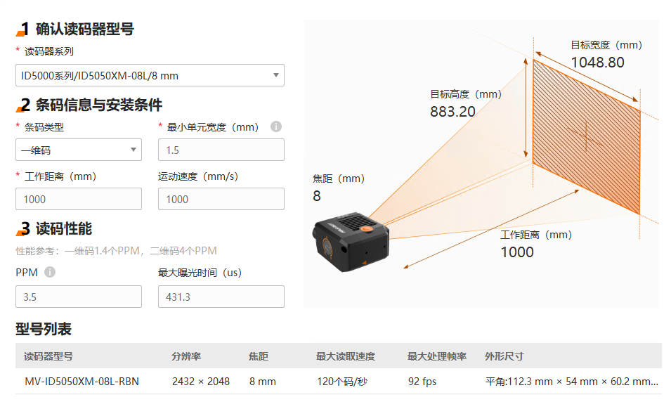

选型工具旨在帮助您根据实际读码需求，快速准确地筛选出最适合的读码器型号，并提供关键的读码性能参数和读码器安装示意图。
-
在菜单栏选择，进入选型工具页面。
-
在读码器系列下的下拉列表中选择读码器
系列及其传感器焦距。
-
在条码信息与安装条件区域，根据您的实际需求配置条码类型、最小单元宽度（mm）、工作距离（mm）和运动速度（mm/s）（选填）参数。
-
在型号列表查看筛选出的读码器型号。
同时读码性能区域显示PPM和最大曝光时间（us）参数值，选型工具页面右上部分显示读码器安装示意图。

图 1 选型工具结果示意图